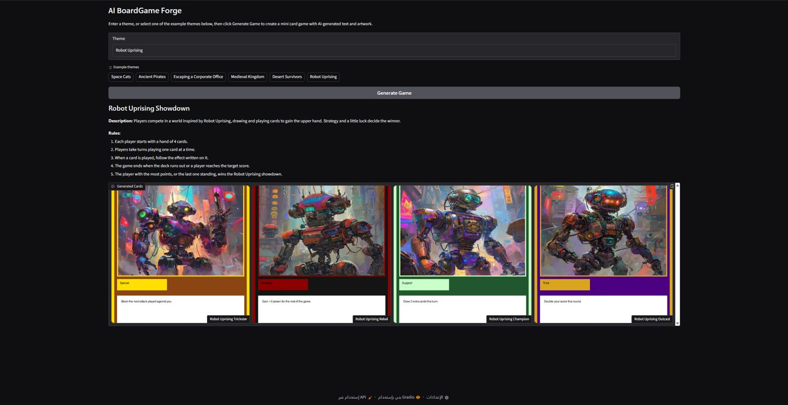

Generative AI · LLM

المشروع النهائي، ومن أفضل مشاريع معسكر الذكاء التوليدي الصيفيFinal project, among the best of the Generative AI Summer Bootcamp
AI BoardGame Forge
تطبيق يحوّل أي فكرة يكتبها المستخدم إلى لعبة لوحية متكاملة: اسم اللعبة ووصفها وقواعدها، وأربع بطاقات لكل منها نوع وقدرة خاصة، مع رسم فني مولّد بالذكاء الاصطناعي لكل بطاقة وتصميم بطاقة جاهز.Turns any theme a user types into a complete board game: title, description and rules, plus four cards each with a type and ability, AI-generated artwork for every card, and finished trading-card layouts.
- الفكرةTheme
- →
- Qwen2.5 → JSON
- →
- رسم البطاقاتCard artwork
- →
- تصميم بـ PillowPillow layout
OUTPUTلعبة كاملة بضغطة زر: عنوان، وصف، 5 قواعد، و4 بطاقات مصممة.A full game in one click: title, description, 5 rules and 4 designed cards.